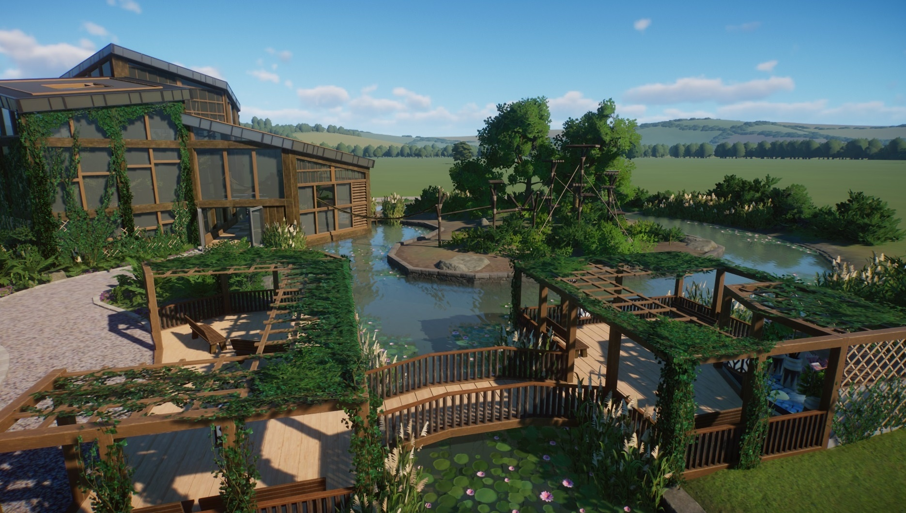

Decoración general
La decoración es un factor muy importante en la llegada de visitantes, un zoo con buena decoración, podría incrementar
la felicidad de los visitantes, pero de lo contrario, habría un claro descenso de la felicidad de los mismos. Pero claro,
esta decoración depende de tu gusto, y clima elegido en este parque. ¿Quién no quiere tener un parque de en sueños?
Si queréis hacer un zoo de ensueños os dejo un link del mejor decorador Español," en mi opinión",Aquí.

Steam Workshop
En "Steam Workshop", podremos acceder a miles de diseños decorativos para nuestro zoo. En el podremos descargar sin límites
todo tipo de contenido, incluso realista, pero no solo diseños, sino incluso nuevas especies de animales. Podréis descargar desde
la mítica roca del rey león hasta restaurantes muy bien diseñados. Para ello deberemos acceder a la pestaña en Steam, que pone Steam Workshop,
y desde allí buscar contenido para Planet zoo, le dais al botón suscribir, y ya estaría listo.